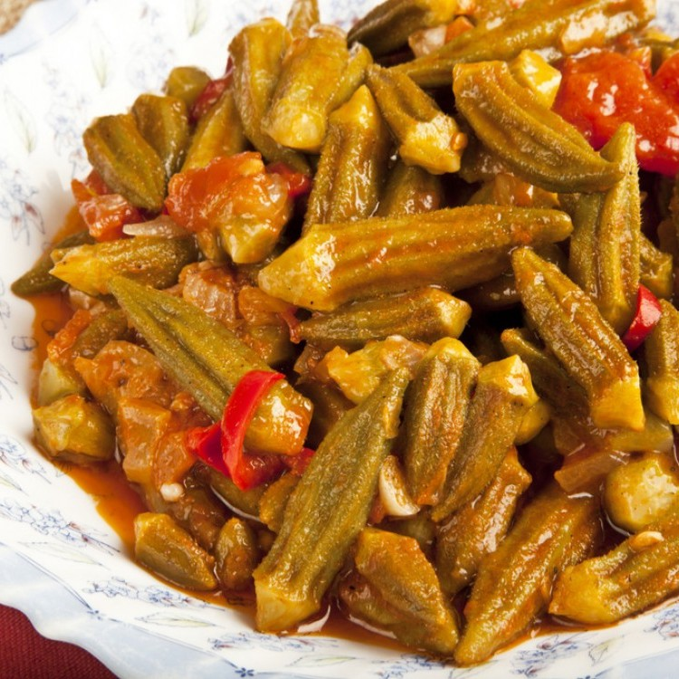

Molokhia
Molokhia, also known as Egyptian spinach or Jew's mallow,is a leafy green vegetable that holds a special place in Middle Eastern and North African cuisines.Its distinctive flavor and slimy texture when cooked make it a unique and beloved ingredient in dishes like molokhia soup or stew.This nutritious plant has a rich history, dating back thousands of years,and its leaves are not only enjoyed for their taste but also valued for their health benefits. Molokhia is often prepared with garlic, coriander, and other seasonings, creating a savory and satisfying dish that reflects the diverse culinary traditions of the region.Whether served with rice, bread, or other accompaniments,molokhia continues to be a cherished part of the gastronomic heritage of its native lands.

Shawarma
Shawarma is a delectable and popular Middle Eastern street food that has gained international acclaim for its tantalizing flavors. This dish typically consists of thinly sliced marinated meat, often lamb, chicken, or beef, which is slow-cooked on a vertical rotisserie. As it roasts, the outer layers become crispy and flavorful, while the inner layers remain tender and juicy. Shawarma is typically served wrapped in pita bread or flatbread, accompanied by a variety of condiments and vegetables such as tomatoes, cucumbers, onions, and tahini or garlic sauce. Its irresistible combination of savory, spiced meat and fresh, crunchy toppings makes shawarma a beloved choice for those seeking a satisfying and delicious meal. Whether enjoyed as a quick street food snack or a sit-down meal, shawarma is a culinary delight that continues to win over food enthusiasts worldwide.

Bamia
Bamia, also known as okra stew or gumbo, is a flavorful and hearty dish that is celebrated in various cuisines around the world, including Middle Eastern, North African, and Southern American cooking. This dish centers around the use of okra pods, which are cooked until tender and often combined with ingredients like tomatoes, onions, garlic, and a blend of spices. Depending on the region, bamia can feature meat, such as lamb, chicken, or beef, or be prepared as a vegetarian option. The stew's distinctive slimy texture from the okra is complemented by the savory, aromatic flavors of the spices and other ingredients. Served over rice or with bread, bamia offers a delightful combination of flavors and textures that continues to delight palates across cultures.
